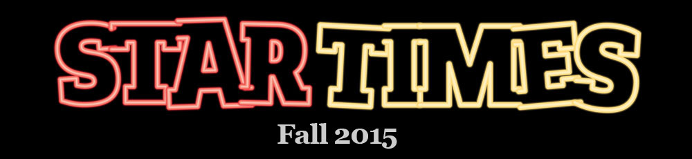

Three times a year, The Seattle Times honors the best athletes and coaches in Seattle-area high-school team sports with its Star Times all-area teams. The fall selections are for football, volleyball and girls soccer.
Seattle Times staffers and freelancers select Star Times all-area honorees from athletes in King and Snohomish counties, plus schools in the Metro and WesCo conferences. Meet fall 2015's selections below.
Published Nov. 30, 2015
<% json.PrepStars_stars.forEach(function(student, i) { %>
 <% }) %>
<% }) %>
Click or tap on an athlete for details.
Photos by Sy Bean
Video by Katie G. Cotterill
Athlete bios by Sandy Ringer and Matt Massey
Production by Nick Eaton and Thomas Wilburn
Video by Katie G. Cotterill
Athlete bios by Sandy Ringer and Matt Massey
Production by Nick Eaton and Thomas Wilburn